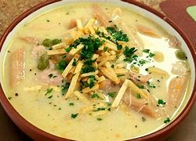

Esta sopa es típica de la región oriental de Bolivia, incluyendo Santa Cruz. Consiste en una base de maní molido con carne de res o pollo, cebolla, ajo, tomate y especias. Se sirve caliente y es muy reconfortante, ideal para los días de Semana Santa.